DOM (Document Object Model)
Se trata de la interfaz que contiene todos los elementos estándares que nos permite representar un documento HTML, XML o XHTML, la cual a su vez contienen una segunda interfaz que nos permite indicar qué elemento se vincula con qué otro y por último una tercera interfaz que funciona como puente para que se pueda trabajar con el DOM desde JavaScript.
Ejemplo Conceptual
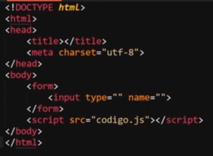
Este código se puede interpretar de la siguiente manera:
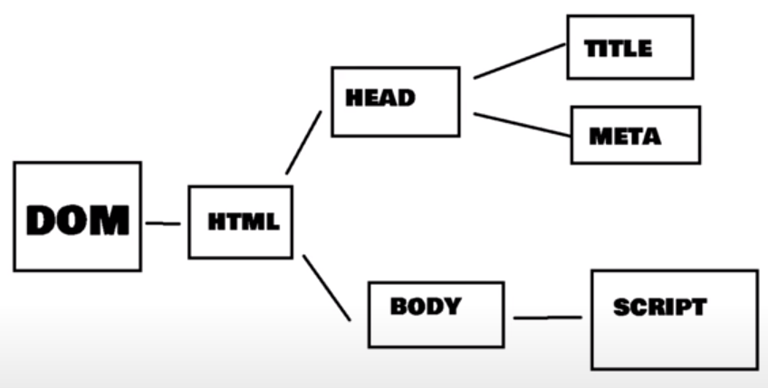
Nodo
-
Un nodo es un proceso interno que hace referencia a cualquier etiqueta HTML del cuerpo, ya sea un párrafo, las etiquetas de una lista o incluso el mismísimo body del documento, por lo cual se pueden categorizar en varios tipos:
-
Documento
Se trata del nodo raíz, del cual derivan todos los otros nodos
-
Element
Se trata de aquellos nodos definidos por etiquetas HTML
-
Text
El texto dentro de un nodo "Element" se considera un nodo hijo de tipo text, en otras palabras el texto de las etiquetas es referenciado por un nodo de tipo text.
-
Attribute
Los atributos de las etiquetas definen nodos, (en JavaScript estos no se ven como nodos, si no, como información asociada a los nodos de tipo Element)
-
Comentarios y Otros
Los comentarios y los elementos como las declaraciones doctype en la cabecera del documento HTML generan este tipo de nodos.
A la hora de trabajar con los nodos puede llegar a ser necesario el conocer con cuál tipo de nodo se está trabajando en el momento, para esto cada uno de los tipos de nodos está vinculado con un valor numérico, el cual hace referencia a su tipo, valores que están indicados en la siguiente imagen.
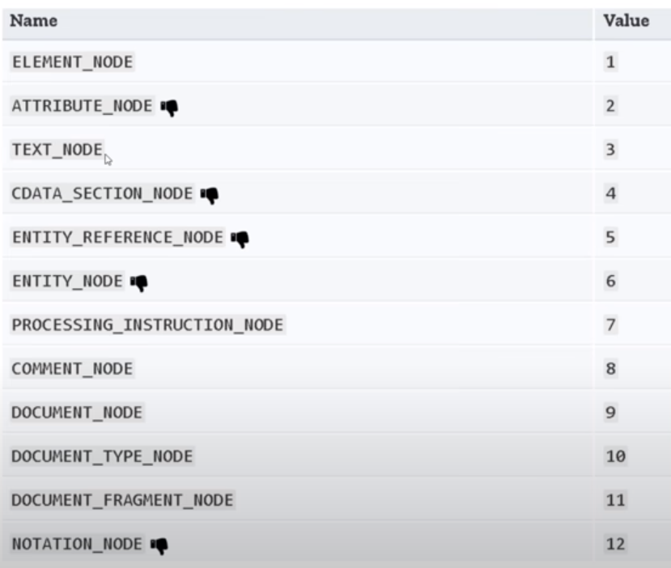
Estos valores serán retornados en aquellas ocasiones en las que se realice una consulta para saber con qué tipo de nodo se está trabajando.
En este cuadro se expresan otros tipos de nodos además de los ya vistos, los cuales no son muy importantes o no forman parte de las recomendaciones oficiales (pulgar abajo).
Nota: Todas las etiquetas HTML son definidas por nodos, pero en contraposición no todos los nodos hacen referencia a etiquetas, también se pueden tratar de otros tipos de elementos.
Métodos de Selección de Elementos
Son los métodos del objeto "Documento" que permiten obtener cualquier elemento o grupo de estos con los que se desee trabajar, para lo cual existen varios tipos de métodos:
GetElementById()
-
Este método permite seleccionar un elemento HTML en base a su ID, el ID de un elemento debiera de ser su identificador único, por lo que al trabajar con el método "getElementById" por lo general lo que se busca es seleccionar únicamente a un elemento en específico.
HTML
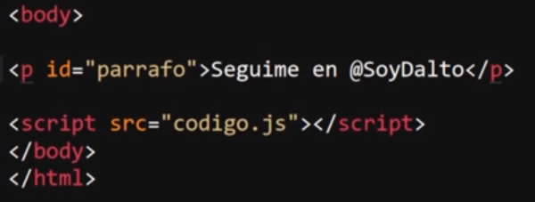
JavaScript
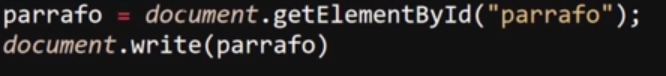
Resultado
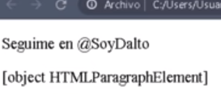
En este ejemplo el documento HTML posee un elemento "p" (párrafo) con un id "párrafo", el cual es seleccionado por medio del método "getElementById" para guardarlo dentro de la variable del mismo nombre, y posteriormente se pide que se imprima en pantalla el contenido de esta variable, lo que retorna la descripción del elemento HTML que se encuentra vinculado a la variable.
GetElementsByTagName()
-
Este método permite seleccionar un conjunto de elementos HTML, en específico todos aquellos que pertenezcan al mismo tipo de etiqueta, para lo cual se define el tipo de etiqueta con su nombre dentro de comillas de la siguiente forma:
JavaScript
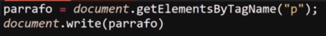
Resultado
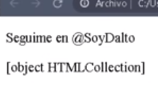
En este caso en el ejemplo se selecciona al elemento HTML en base al tipo de etiqueta, por lo que todos aquellos elementos que pertenezcan a la misma etiqueta serán seleccionados, por ello al guardar los elementos dentro de la variable "párrafo" e imprimirlo en pantalla se especifica que no se trata de un elemento, si no de una colección de estos.
Este método retorna una lista de elementos (no es un array, si no un objeto), por lo que en el caso de que se quiera seleccionar únicamente uno de estos se indica la posición en la que se encuentra este elemento (empezando por la 0) de la siguiente forma:
JavaScript
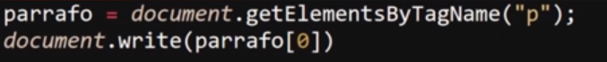
Resultado
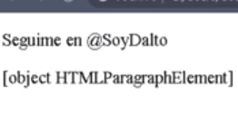
En este segundo ejemplo se selecciona únicamente el primer párrafo del grupo de etiquetas "p".
Nota: Esta no es la mejor forma de seleccionar elementos individuales.
QuerySelector()
-
Este método devuelve el primer elemento que coincida con el grupo especificado de selectores CSS, es decir este método selecciona los elementos HTML en base a los selectores CSS que posean, sin embargo únicamente seleccionará el primero de estos elementos.
Al emplear este método es importante tener presente que para indicar el selector es necesario hacerlo de la misma forma que se indican dentro de un documento CSS, de la siguiente manera:
HTML
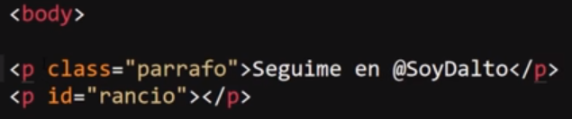
JavaScript
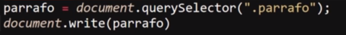
Nota: Recordar que en CSS el selector para las clases es un punto antes del nombre.
Resultado
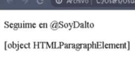
En este ejemplo se define la clase "párrafo" para el primer elemento "p", y se emplea el método "querySelector" para seleccionarlo y guardarlo en la variable "párrafo", ya que este método solo retorna el primer elemento si se desease seleccionar el segundo elemento "p" se tendrá que aplicar un selector CSS de ID (#nombre) y posteriormente aplicar este método.
Nota: Pese a que este método permite seleccionar elementos por su ID el método "getElementById" es más óptimo.
QuerySelectorAll()
-
Este método se asemeja mucho en funcionamiento a "querySelector", con la diferencia de que este no selecciona únicamente el primer elemento sino que los retorna a todos, y lo hace dentro de una "lista de Nodos", (la cual es un objeto), por lo que la forma de seleccionar un único elemento es similar a la del método "getElementsByTagName".
HTML
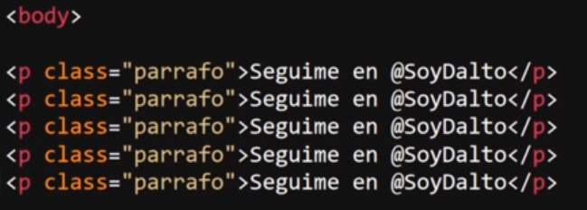
JavaScript
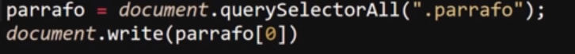
Nota: Recordar que en CSS el selector para las clases es un punto antes del nombre.
Resultado
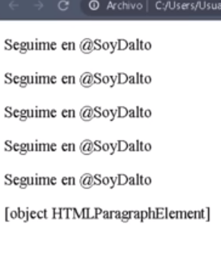
En este ejemplo se utiliza el método "querySelectorAll" para seleccionar todos los elementos que posean la clase "párrafo" y posteriormente se indica que se imprima en pantalla el elemento en la primera posición.
Métodos para Definir, Obtener y Eliminar Valores de Atributos
SetAttribute()
-
Este método permite modificar o generar los atributos de elementos HTML, su funcionamiento es muy simple, basta con seleccionar un elemento, almacenarlos en una variable y posteriormente a esa variable aplicarle esta propiedad, la cual recibe dos datos de tipo String, el primero corresponde al nombre del atributo que se desea modificar, mientras que el segundo dato define el nuevo valor que se le asignará.
HTML
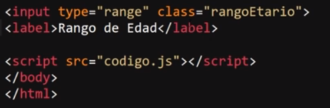
Resultado HTML
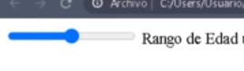
JavaScript
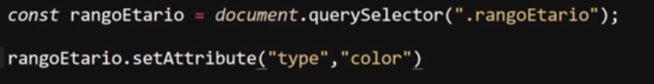
Resultado JavaScript
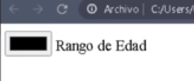
Nota: Este método funciona incluso si el elemento no tiene definido el atributo, ya que este método permite remplazar o generar el valor de estos.
GetAttribute()
-
Este método permite obtener el valor de un atributo de algún elemento HTML, es decir retorna el valor que se encuentra entre comillas ("") del atributo.
Por lo tanto es un método con un funcionamiento muy similar al anterior con la diferencia de que solo recibe un dato, el cual corresponde al nombre del atributo del que se extraerá su valor.
JavaScript
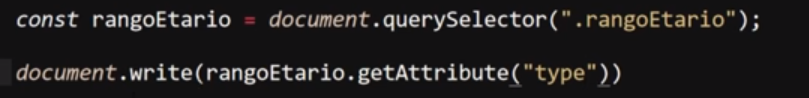
Resultado
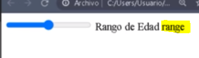
En este ejemplo aunque no se evidencie mucho, el valor del atributo ("type") se imprime en pantalla y se muestra al lado de los elementos HTML.
RemoveAttribute()
-
Este método permite directamente eliminar los atributos de un elemento, su funcionamiento es muy similar al de los anteriores métodos, el cual solo recibe un dato de tipo string, el cual corresponde al nombre del atributo que será eliminado.
JavaScript
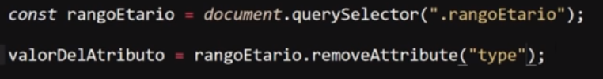
Atributos Básicos HTML
Atributos Globales
-
En HTML existen numerosos atributos globales, sin embargo un listado de los atributos globales que más comúnmente son usados son:
-
Class
Lista de clases del elemento separadas por espacios
-
Contenteditable
Indica si el contenido puede ser modificable por el usuario, recibe valores booleanos (true, false).
-
Dir
Ese atributo define la dirección del texto, su valor por defecto es ltr (left to Right), también posee el valor: rtl (Right to left)
Nota: este atributo es mejor aplicarlo desde CSS no desde HTML
-
ID
Define un identificador único para un elemento
-
Hidden
Este atributo no posee valor, solo con el estar definido el elemento se ocultará.
-
Tabindex
Este atributo define si un elemento puede obtener un focus de input, para su funcionamiento este atributo debe poseer un valor numérico, ya que también funciona para definir el orden en el que varios elementos reciben el focus,
-
Title
Este atributo permite definir el texto de información extra que aparece al mantener el ratón sobre un elemento.
Todos estos atributos pueden ser manipulados con los diferentes métodos mencionados anteriormente.
Métodos de Inputs
Para JavaScript los métodos de los inputs son especiales, ya que al ser un elemento que guarda una estrecha relación con el lenguaje este se encuentra adaptado para trabajar con estos atributos más fácilmente,
Tanto así que JavaScript puede interactuar con estos como si se tratase de un objeto cualquiera, por ende se les puede aplicar varios métodos que modificarán los atributos de los input.
Para ejemplificar adecuadamente todos estos métodos partirán de este ejemplo HTML:
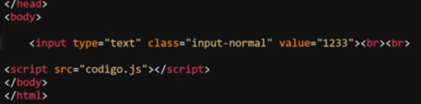
Nota: Para trabajar con los inputs directamente desde JavaScript se necesita seleccionar el elemento y guardarlo en una variable.
ClassName
-
Este método permite retornar el valor del atributo "class", es decir retorna el valor que se encuentra entre comillas ("") del atributo "class".
Ejemplo
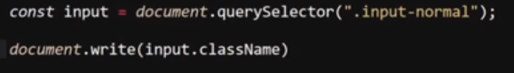
Resultado
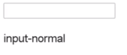
En este ejemplo se inscribe el valor de la propiedad "class" en pantalla.
Value
-
Este método permite obtener el valor de la propiedad value, es decir retorna el valor que está entre comillas ("") del atributo "value" (texto por defecto).
Ejemplo
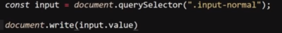
Resultado
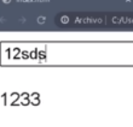
Type
-
Este método permite modificar el valor de la propiedad "type" del elemento input, por lo tanto permite modificar dinámicamente el tipo de input.
Ejemplo
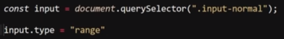
Resultado
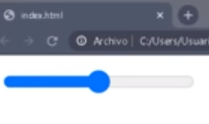
Accept
-
Este método permite determinar qué tipo de archivo va a ser aceptado por un input de tipo "file", es decir permite delimitar los archivos que pueden ser enviados por los usuarios.
Ejemplo
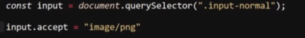
Resultado
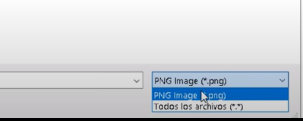
Nota: este atributo también puede ser modificado desde HTML
Form
-
Este método permite modificar el valor del atributo "form" de un botón, en un formulario si se ingresa un botón de tipo submit este por sí solo se vinculará al formulario siempre y cuando este esté definido dentro de este, para los casos en los que no es así y el botón se encuentra por fuera es el atributo "form" el que se encarga de vincular el botón con el formulario y esto lo hace a través del "id" del formulario.
Minlength
-
Este método permite modificar el valor del atributo "minlength", el cual se encarga de asignar una cantidad mínima de caracteres a un input de tipo "text" para que sus datos puedan ser enviados, si no se cumple esta condición se lanza un mensaje de alerta al usuario.
Ejemplo
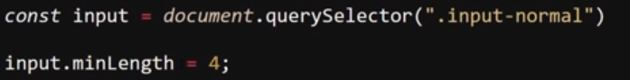
Resultado
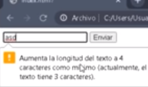
PlaceHolder
-
Este método permite modificar el valor del atributo "Placeholder", el cual permite designar un texto por defecto al input de tipo "text".
Ejemplo
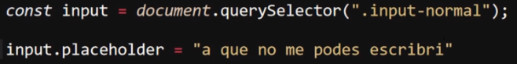
Resultado
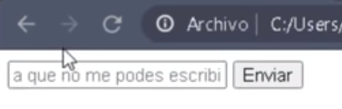
Required
-
Este método permite modificar el valor del atributo "required", el cual se encarga de definir si un elemento de un input es requerido para enviar la información, es decir define si un campo tiene que ser completado para realizar el envío de los datos.
Ejemplo
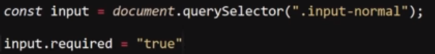
Resultado
Nota: A este atributo cualquier valor ingresado lo habilita, desde un true hasta un espacio (" ").
Método Style
Se trata de un método que permite modificar ciertos aspectos de los estilos desde JavaScript, para hacerlo este método posee multitud de sub-métodos, los cuales hacen referencia a una propiedad CSS, es decir cada sub-método representa un atributo de estilos del elemento seleccionado, estos sub-métodos se definen de la misma forma que un método común, (un punto y el nombre del método).
A su vez luego de definir el sub-método que hace referencia a la propiedad CSS a aplicar se concatena con el signo igual y se ingresa entre comillas ("") el valor que se aplicará a dicha propiedad CSS, por lo tanto la estructura del método "style" sería así: "método style", "sub-método (atributo CSS)" seguido del valor de la propiedad CSS.
Ejemplo
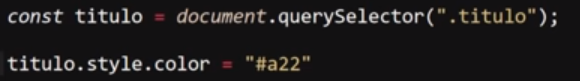
Resultado
Como se puede apreciar en el ejemplo al elemento HTML, el cual se encuentra seleccionado a partir de su clase se le aplica el método "style" más específicamente el sub-método "color" el cual hace referencia al atributo CSS "color", responsable de cambiar los colores de los elementos.
De este modo, utilizando los sub-métodos se puede especificar los valores de las propiedades CSS, un aspecto a considerar es que en CSS originalmente las propiedades cuyos nombres poseen varias palabras se escriben con una barra lateral (-) separándolos, en JavaScript por otro lado se emplea camelCase, por lo que las palabras se escriben pegadas pero con la primera letra de cada palabra en mayúscula como en el siguiente ejemplo:
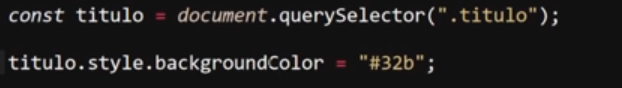
Nota: para modificar otra propiedad de CSS se requiere realizar el llamado al método de nuevo, no se puede modificar varios estilos de una sola vez.